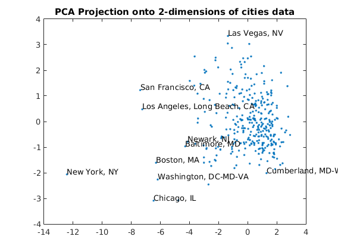

Description of demo_unsupervised_PCA_FactorAnalysis.m
Demonstrates usage of PCA on synthetic data and shows Factor Analysis and PCA on a real dataset
Contents
Principle Component Analysis on Synthetic Data
clear all close all f=1;
Generate synthetic data
x1 = randn(500,1); x1 = x1-mean(x1); x2 = randn*x1 + randn(500,1); x2 = x2-mean(x2); figure(f);clf;hold on;f=f+1; plot(x1,x2,'.'); title('Mean-Adjusted Data'); xl = xlim; yl = ylim; xl(1) = min(xl(1),yl(1)); xl(2) = max(xl(2),yl(2)); xlim(xl); ylim(yl); X = [x1 x2]; [n,p] = size(X); C = (1/n)*X'*X; [U,S,V] = svd(C);
Plot Principal Components
m1 = V(2,1)/V(1,1); m2 = V(2,2)/V(1,2); h1 = plot([xl(1) xl(2)],[xl(1)*m1 xl(2)*m1],'r'); h2 = plot([xl(1) xl(2)],[xl(1)*m2 xl(2)*m2],'g'); legend([h1 h2],'PC1','PC2');
Plot Projected Data
Xp = X*V; figure(f);clf;hold on; f=f+1; plot(Xp(:,1),Xp(:,2),'.'); title('Rotated Data'); h3 = hline(0,'r'); h4 = vline(0,'g'); legend([h3 h4],'PC1','PC2');
PCA & Factor Analysis on 9-D quality of life ratings for U.S. Cities
load cities.mat X = ratings; % Reduce to 2-dimensions with PCA options = struct('maxComponents',2); model = ml_unsupervised_dimRedPCA(X,options); Xreduced = model.reduceFunc(model,X); figure(f);f=f+1; plot(Xreduced(:,1),Xreduced(:,2),'.'); title('PCA Projection onto 2-dimensions of cities data'); gname(names) % Reduce to 2-dimensions with FA options = struct('nComponents',2); model = ml_unsupervised_dimRedFA(X,options); Xreduced = model.reduceFunc(model,X); figure(f);f=f+1; plot(Xreduced(:,1),Xreduced(:,2),'.'); title('FA Projection onto 2-dimensions of cities data'); gname(names)
Number of Components selected: 2 Variance explained by basis: 0.51